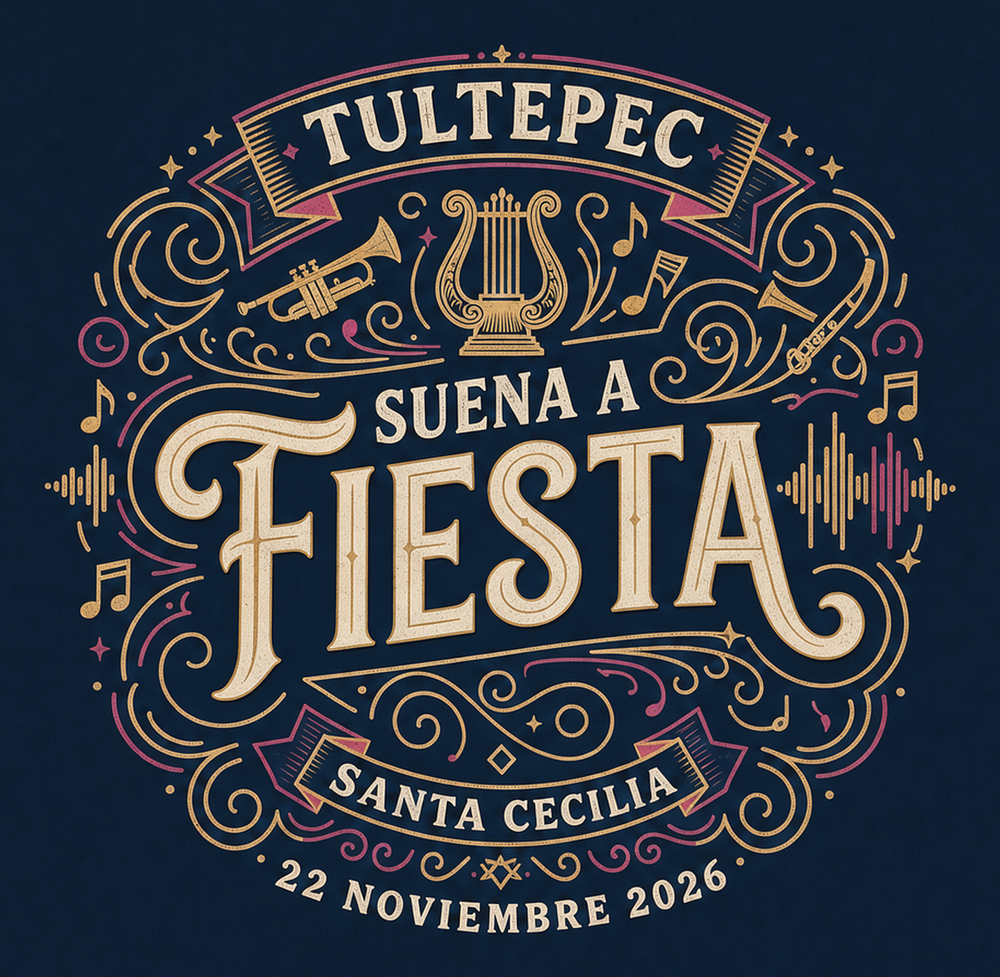
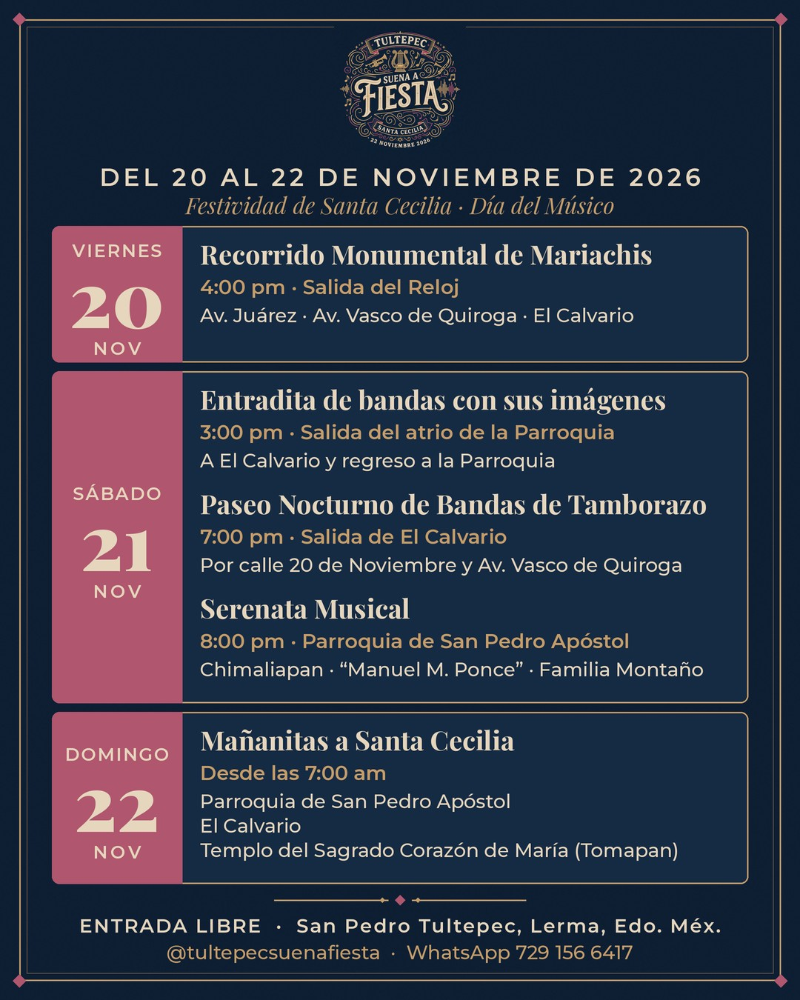
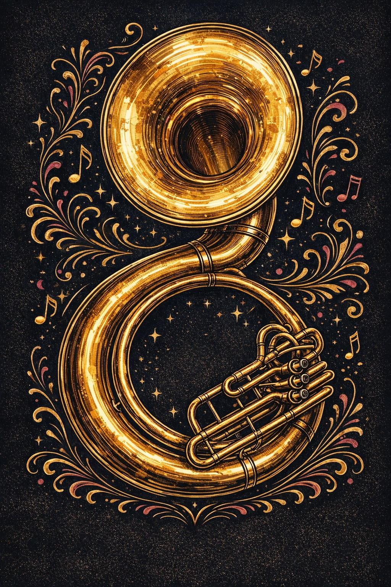
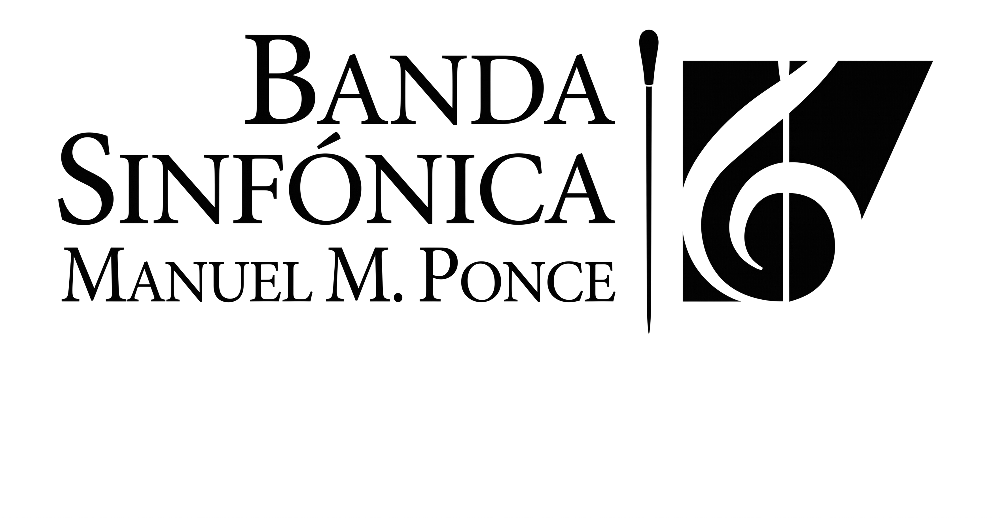
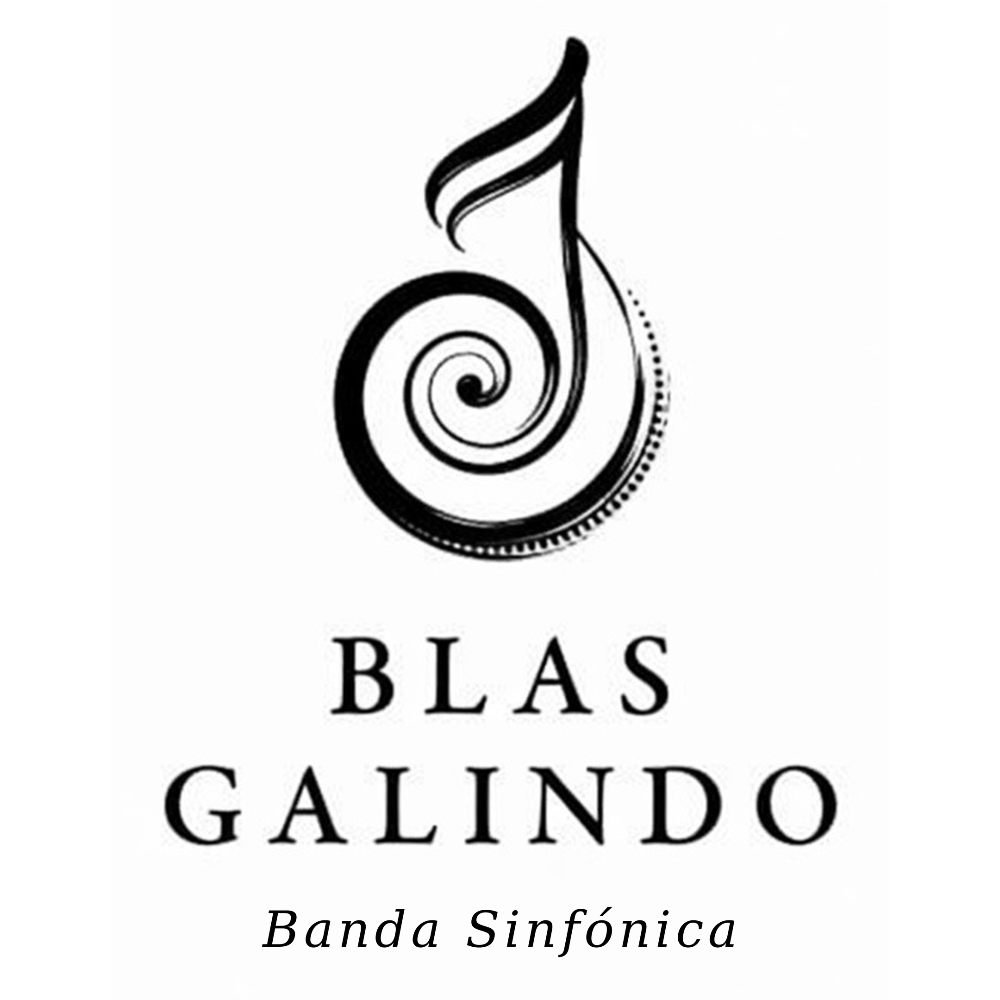
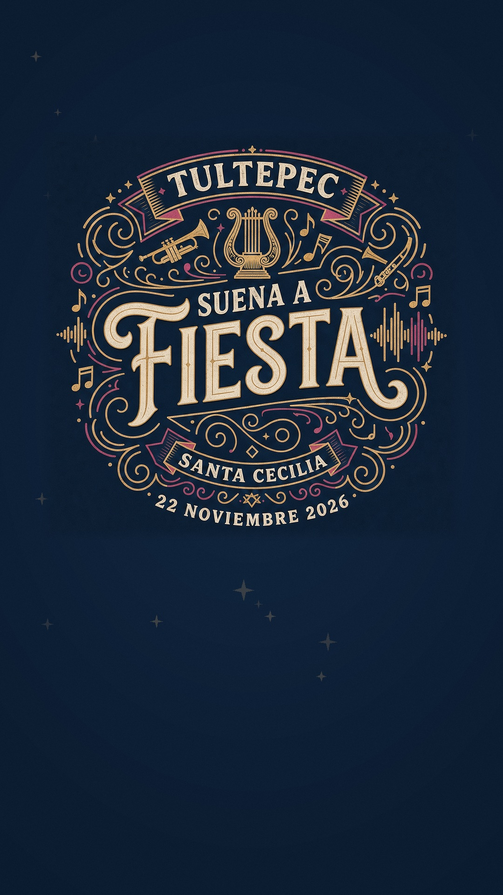

VIE20NOV
4:00 PM · CALLES DEL PUEBLO
Monumental Recorrido de Mariachis
Una sorpresa musical recorrerá las calles de Tultepec. Ven a vivir el ambiente y acompaña el trayecto.
RUTAEl Reloj → Av. Juárez → Av. Vasco de Quiroga → El Calvario

✦ San Pedro Tultepec · Lerma, Estado de México
Festividad de Santa Cecilia · Día del Músico
Entrada libre · Todas las actividades son públicas
La fiesta comienza en
Tres días para celebrar a quienes hacen de la música una tradición viva.
✦El pueblo se encuentra, las bandas suenan y Santa Cecilia nos reúne.
Guarda las fechas
Acompáñanos en las calles y plazas de San Pedro Tultepec. Elige tu momento y comparte la celebración.
4:00 PM · CALLES DEL PUEBLO
Una sorpresa musical recorrerá las calles de Tultepec. Ven a vivir el ambiente y acompaña el trayecto.
3:00 PM · RECORRIDO TRADICIONAL
Las bandas y sus imágenes recorren el pueblo en una de las expresiones más queridas de la festividad.
7:00 PM · MÚSICA EN MOVIMIENTO
El ritmo sale a las calles. Al terminar el recorrido, las bandas participantes tocarán juntas “Las Mañanitas” y algunos temas más.
Conoce el paseo8:00 PM · PARROQUIA DE SAN PEDRO APÓSTOL
Una noche de música sinfónica para celebrar a Santa Cecilia.
DESDE LAS 7:00 AM · TRES SEDES
La comunidad se reúne para cantarle a la patrona de los músicos.
Entrada libre. Todas las actividades son públicas. ¡Invita a tu familia y amistades!

Llévalo contigo
Guárdalo en tu teléfono y ayuda a que la celebración llegue a más personas.
Guardar cartel ↓Sábado 21 · 7:00 PM
El Paseo Nocturno de Bandas de Tamborazo llenará de música las calles de San Pedro Tultepec. Sigue la ruta, siente el ritmo y quédate al encuentro musical al terminar.
Al final, las bandas participantes tocarán juntas “Las Mañanitas” y algunos temas más.

Músicos que hacen comunidad
Celebramos el talento y la tradición de las agrupaciones confirmadas para esta edición.
Mtro. Eladio Montaño
SÁBADO 21 · DOMINGO 22
Omar Bastida
SÁBADO 21Tradición musical de Tultepec
SÁBADO 21 · DOMINGO 22
Hermanos Romero Meza
DOMINGO 22
Mtro. Manuel Lechuga Flores
DOMINGO 22
Familia Bastida
DOMINGO 22Familia Ortega
DOMINGO 22La música nos une. Gracias a cada agrupación que hace posible esta celebración.
Una tradición que vive
Conoce la historia y el simbolismo de la patrona de los músicos, a través de esta serie ilustrada.


Escucha la invitación
Comparte el spot oficial y corre la voz: este noviembre, San Pedro Tultepec celebra la música y a Santa Cecilia.
Ver spot oficial ↗
SPOT OFICIAL · 45 SEGLa fiesta la hacemos entre todos
Si eres músico, formas parte de una agrupación o quieres apoyar este proyecto cultural, nos encantará escucharte.
WHATSAPP 729 156 6417 · CORREO coordinaciontultepecsuena@gmail.com